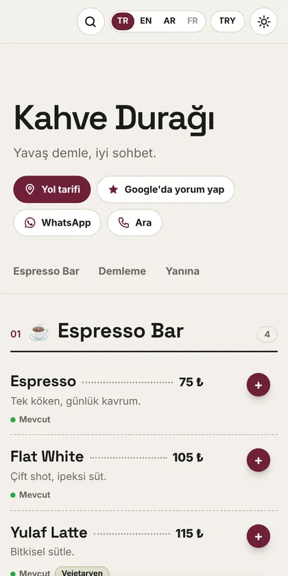

Fotoğrafsız da şık
Yazı odaklı menü panosu tasarımları.
Kahve, Simit ve Tatlı gibi tasarımlar kafeler için hazırlandı. Fotoğrafı olmayan ürünler bile şık görünür; günün çekirdeğini ve tükenen ürünleri saniyede güncelle.

Yazı odaklı menü panosu tasarımları.
Mevcut, az kaldı, tükendi.
Misafir menüden profiline geçer.
Sade bir görünüm için Kahve, kahvaltı için Simit, pastane için Tatlı ya da Karnaval öneririz. Hepsini galeride canlı deneyebilirsin.